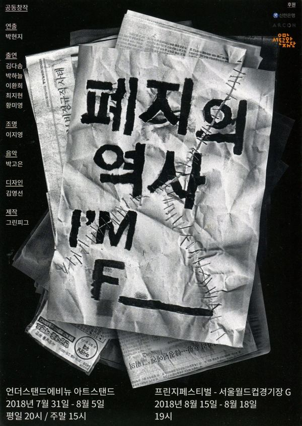

그린피그 > 아카이브 > 폐지의 역사 (I'M F_)
공동창작, 박현지 연출

2018.7.31–8.5 / 언더스탠드에비뉴 - 그린피그 젊은연출가전 2018.8.15–18 / 월드컵경기장 - 서울프린지페스티벌 2019.1.17–19 〈폐지의 역사〉 / 두산아트센터 스페이스111 - 두산아트랩
이전: 〈고발자들〉 | 다음: 〈꿈배양〉 아카이브로 돌아가기
발행일 2026.11.9